第12回 防具付全日本空手道選手権大会 に出場しました
８月２日、東京都に於いて開催されました 第12回 防具付全日本空手道選手権大会 に、楊心門より選手団が出場いたしました。遠路を共にしていただいた保護者の皆様、そして温かいご声援をお寄せくださったすべての皆様に、心より御礼申し上げます。
４月の 第8回 防具付鹿児島県空手道選手権大会 から掲げてまいりました「全国の舞台へ」という目標の日。少年部から一般部まで、それぞれが日頃の稽古で培ったものを全国の強豪に対してぶつけ、最後まで諦めない姿を見せてくれました。
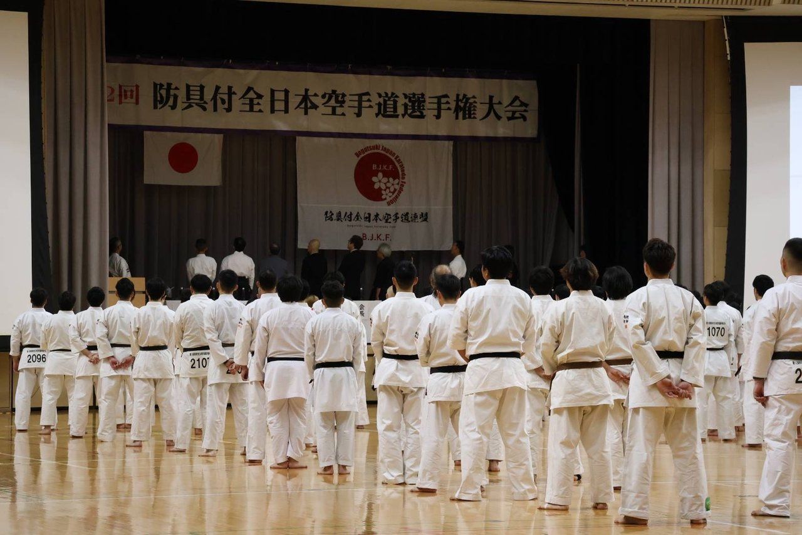
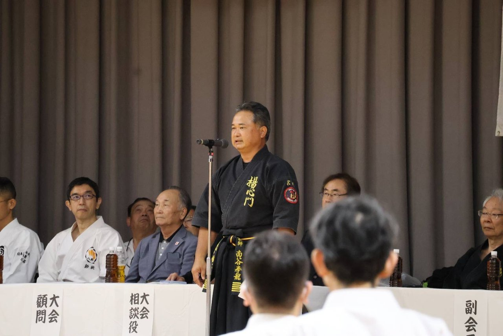
日章旗と防具付全日本空手道連盟の旗が掲げられた場内に、全国から集った選手が静かに整列し、大会の幕が開きました。宗師 南谷 拳龍 は 大会審判長 を務め、全国の試合場を見守りました。
形の部 ― 一突一蹴に、日々の稽古の積み重ねを
形※定められた一連の技を演武する稽古法の部では、少年部の門下生から順に演武の場へ。全国の審判の眼前という緊張の中でも、立ち方の一つ、突きの一本にまで意識を通し、堂々と技を披露いたしました。
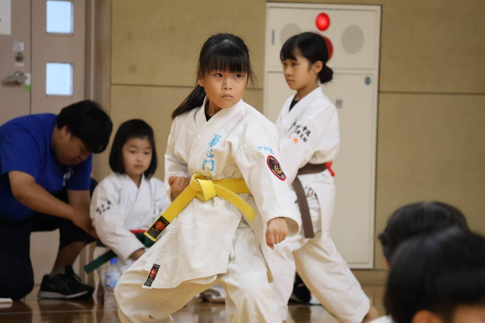
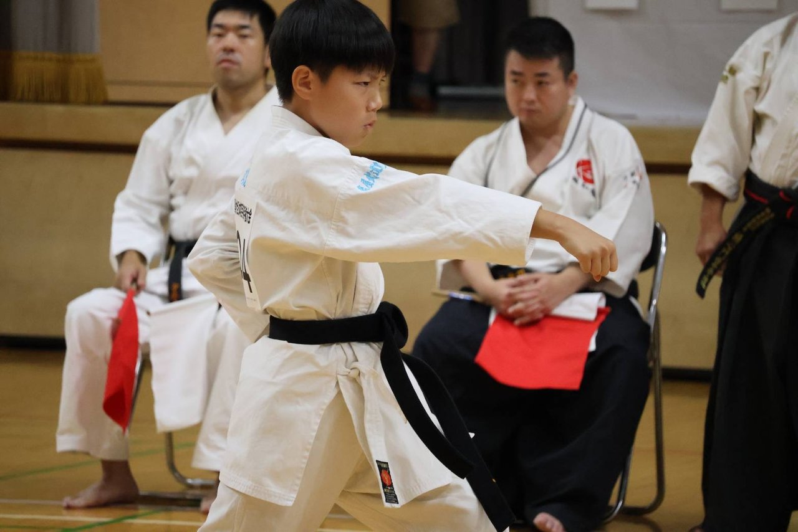
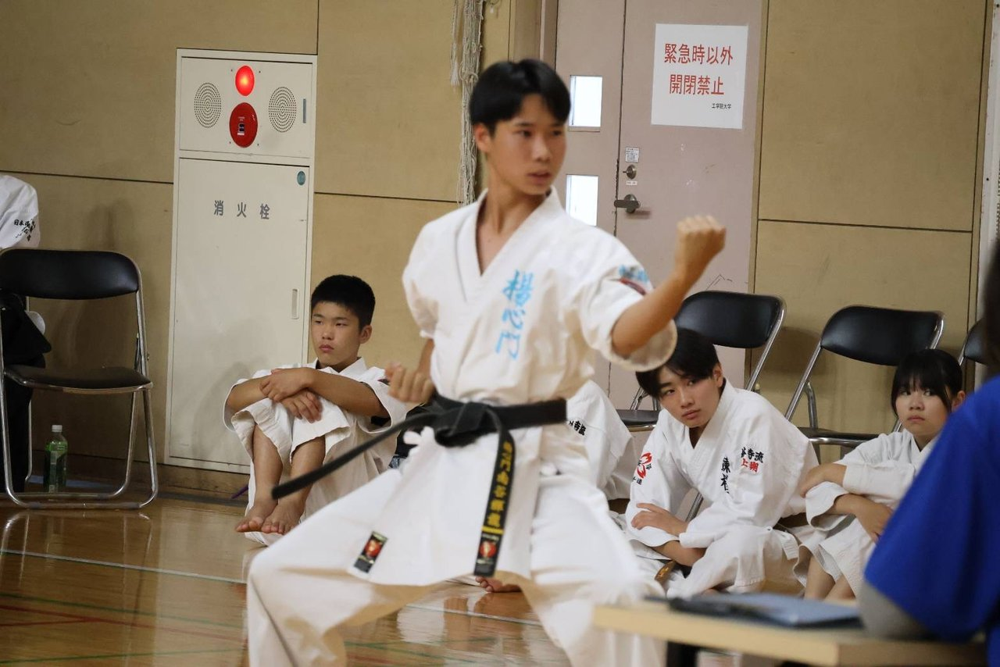
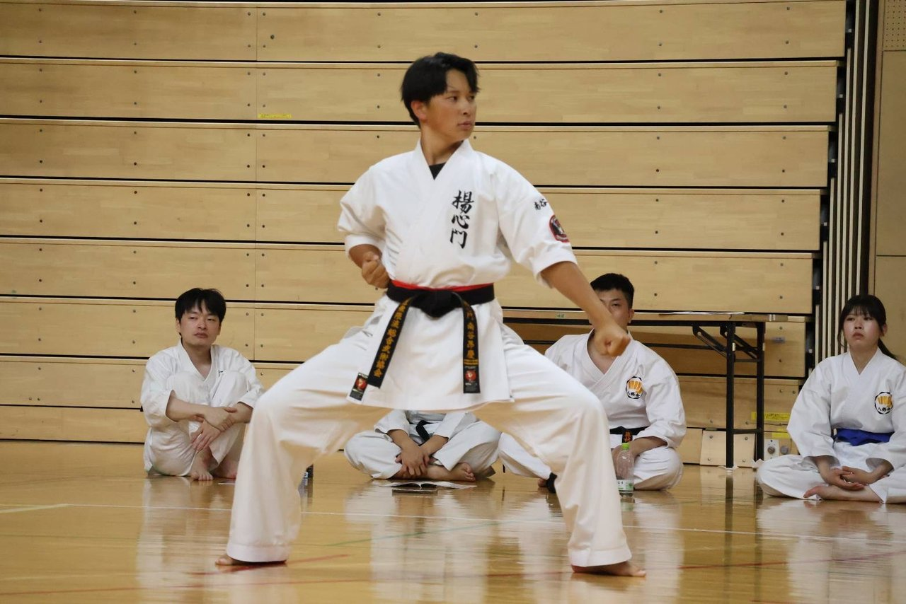
組手の部 ― 防具を着け、全力で当たる
防具付組手※面（めん）と胴（どう）などの防具を着け、突き・蹴りを直接当てて競う組手の部では、面と面が触れ合う間合いでの真っ向勝負が続きました。突きを受けても前へ出る、崩れても構えを立て直す。７月の強化稽古で取り組んだ「最後まで諦めない精神力」が、そのまま試合場に表れていました。
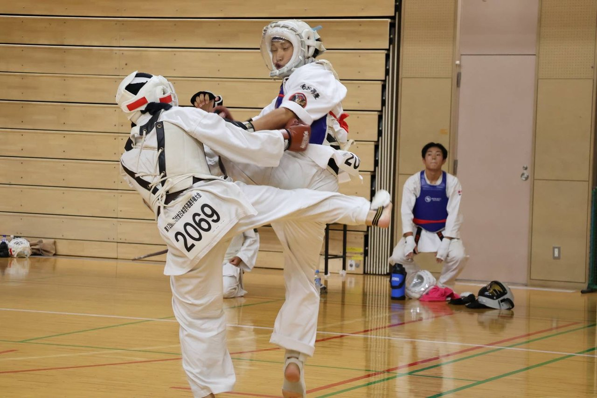
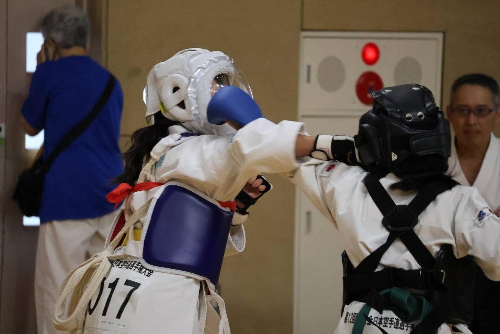
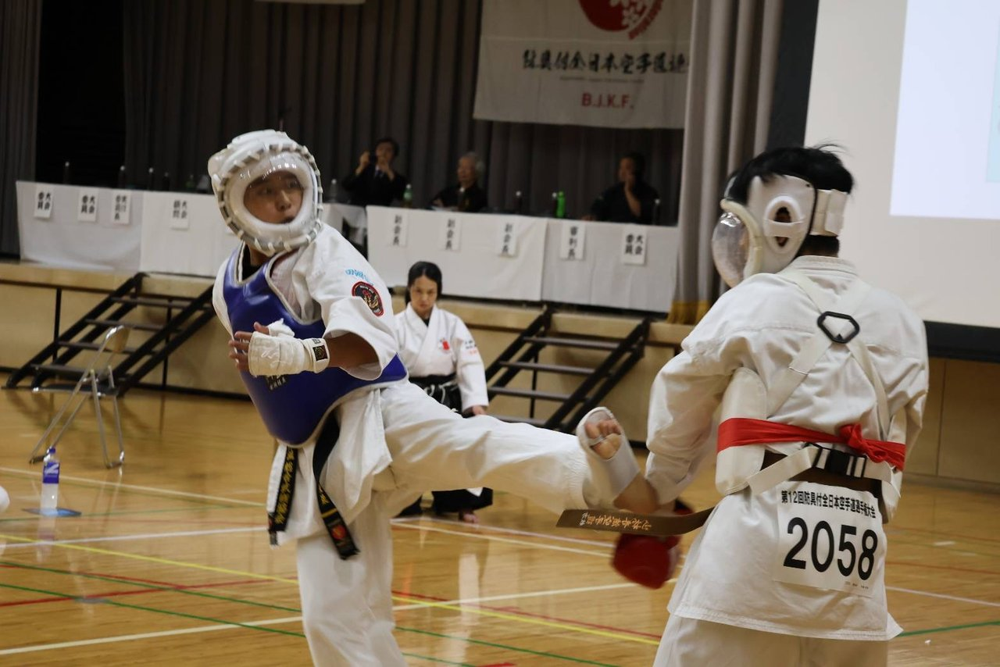
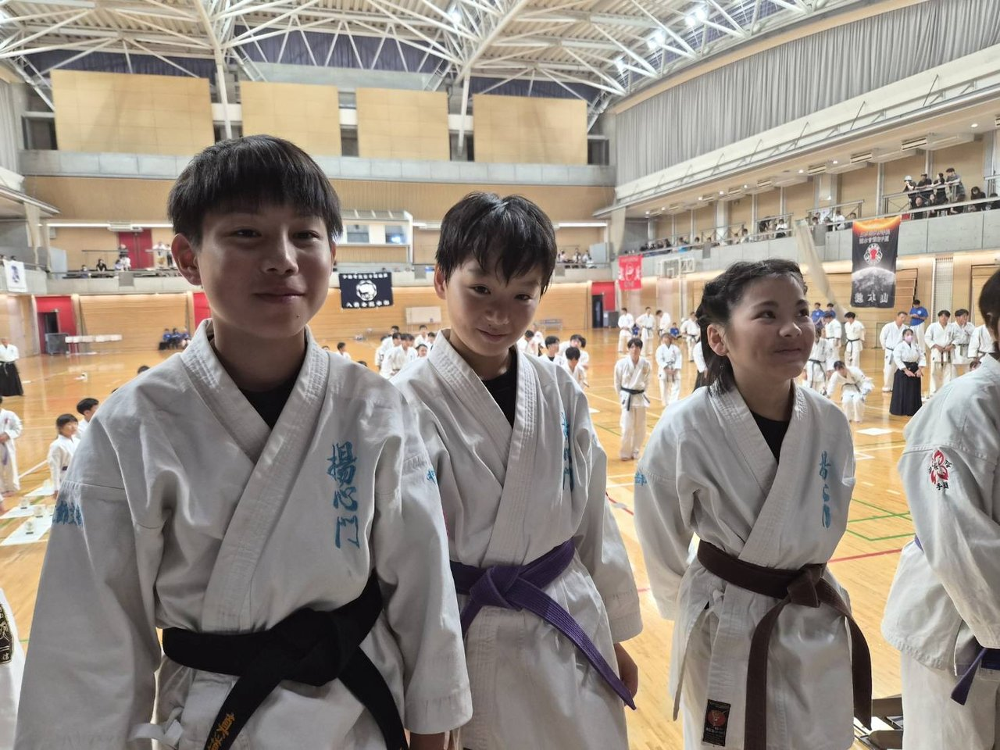
個人・団体の各部門で入賞を果たしました
全国の舞台において、楊心門の門下生が個人の部・団体の部それぞれで入賞を果たしました。中学生の組手団体戦では準優勝。仲間と背中を預け合い、チームとして勝ち上がった結果です。
入賞に届かなかった選手にも、全国の相手と真正面から組み合った時間が確かに残りました。この経験こそが、次の一年の稽古を支える力になります。
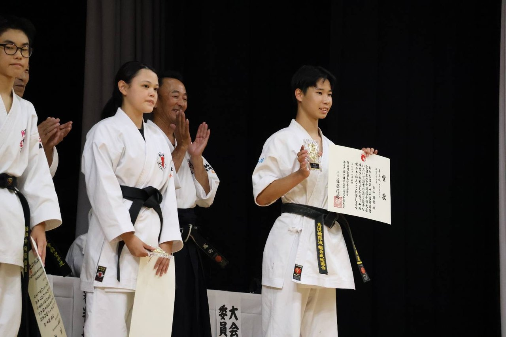
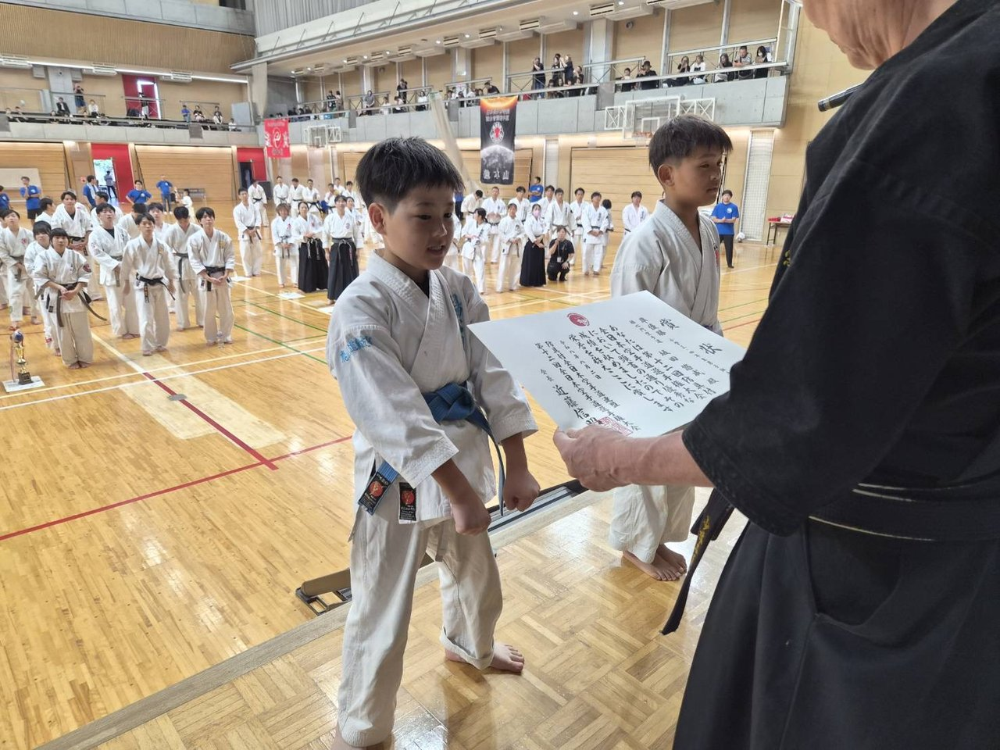
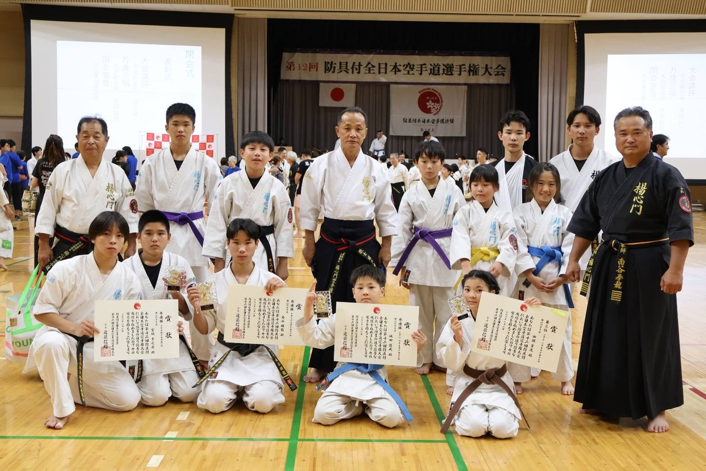
- 防具付空手道は、面・胴などの防具を着用し、突きや蹴りを直接当てて勝敗を競う競技形式です。
- 大会は形の部と組手の部に分かれ、組手の部には個人戦と団体戦があります。
次なる舞台は
第５回 白龍武道大会
８月２３日、鹿屋市武道館にて開催予定の 第５回 白龍武道大会 では、無限龍拳・飛龍拳 にてサイ術※釵（さい）と呼ばれる三叉状の武器を用いた武器術の演武を予定しております。全国の舞台で得たものを胸に、楊心門一同、稽古を重ねてまいります。今後とも変わらぬご支援・ご声援を、どうぞよろしくお願いいたします。